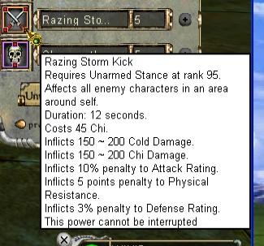

- Implemented the expanding menus I used on my other site.
- Removed as many references to the Gudang as I could find from the item lists.
- Added HP/Chi costs for the Five Clans version of Clan Powers. These are shown in bold orange after the original costs.
- Added Yong Le towns (JZW, CF, JT) to most location lists, such as skills and all types of crafting comps.
I may fiddle with the expanding menus a bit more but I probably won't make a new news post if I do. It was actually pretty easy to put them in since both of my sites use basically the same code.
Welcome
Lotus Goddess Archives is a fan site for the game Fung Wan Online, with information relating mainly to the PSO Fire Kirin Server and the now defunct Storm Riders Online server. The information repository here operated by the Lotus Goddess Guild contains much useful data on FWO/PSO/SRO, and some media as well. Just remember, masks and armor are still offenses against heaven.
- Added/Updated some information relating to powers in the Five Clans Server (Yi Tech, WSKF, Death Storm)
- Fixed listed range on Unarmed Power, Cleanse the Body
Let me know if you see any errors in power or item stats (but NOT Gold Costs).
FWU Server's modified clan powers are not listed in the pages, but you can see their changes (or at least the ones they had me write) listed in this Update Log, along with my FK server map.bin edits.
Given the current state of affairs I must announce that this site is, for all intents and purposes, considered to be closed for updates. However, it will continue to exist and I have no plans to shut it down.
- Fixed a major bug in the gallery code (Screenshots and Clothing sections)
- New link to the site available: http://fwo.lotusgoddess.ca The old links will continue to function.
~MiaoCuihua
- Updated Set effects for Boundless sets to the new stats (this has been reverted, the pso stats are now on a separate page)
- Rearranged the weapon components list on the main 'Rare Items' page:
The components within each quality type are now listed in alphabetical order.
(For components listed by element and type use the main weapon components page,
which has not been changed).
- Updated Gudang availability on some items
- Added GK Gudang availability for Heavenly weapon components
- Added Ying Yang Ring to main weapon components page (previously, it was only
on the event / quest / festival item page)
- Various minor edits
~MiaoCuihua
- Updated Gudang Item Availability
- Updated stats on changed stat items (clan pads listed in hq shopping lists)
- Fixed Link to SMC HQ Stores List (I don't know how I missed this one)
- Fixed broken links in SRO Chat screenshots
- New Screenshots:
- Added 57 SS to PSO General
- Added 6 SS to PSO Events
- Added 5 SS to PSO Weird
- Added 1 SS to PSO Chat
- Added 4 SS to SRO General
- Added 1 SS to SRO Chat
- Added 2 SS to Other
It has come to my attention that someone was impersonating me in game to scam people, using the name 'ByMiaoCuiHua'. I will never ask to trade or borrow items, neither for other items or for money. Likewise, I will not ask for logins, I do not have any volunteer gm powers and I do not use malaysian email addresses (nor can I speak malay).
~MiaoCuihua
Razing Storm Kick has been updated across the site with its new stats.

~MiaoCuihua
Sometimes, things you make for yourself unexpectedly help other people too. 
Instructions for the manual patch:
- Unzip the file to your fwo or pso folder. When it asks you if you want to replace the existing file, select yes. Restart the Client to see the changes (it makes the missing icons visible again). Done.
Information and Link on http://fwo.com.my/main/english/ or http://www.pso.com.my/
~MiaoCuihua
- Updated Gudang Availability for the items recently added
- Added the 1.3 LPs into the rest of the power pages (by stance and by type)
- Added set effect stats for Moon and Patriot Set
- Added a separate page with all of the Equipment sets
- Corrected a few typos in the RSK quest guide
- Updated DR Stats on Uncommon Clothing
- - Back to Home -